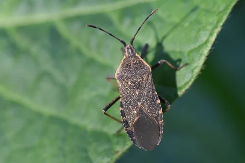

南瓜萎蔫，叶背有铜色卵块和灰色若虫
南瓜蝽用刺吸式口器取食，常躲在叶背和茎下部。发现南瓜叶萎蔫时，应翻叶寻找卵块和能移动的若虫，综合判断是否正在受害。

先看哪里
翻看南瓜靠近根冠的叶片，在叶脉交角处寻找密集成块的铜色虫卵。有卵株附近尚未萎蔫的植株也要查看。低龄若虫常集中在小范围，每株只随意翻一片叶可能会漏掉。
确认线索
受扰后，灰身黑足的若虫或狭长褐色成虫可能转移到茎上。植株旁落叶下面也值得看。
相似症状
多种原因都会导致萎蔫。茎基部有孔且堆积粗蛀屑更像蛀茎幼虫；看到刺吸的蝽虫及其卵块则支持南瓜蝽。
处理方法
小菜园可清除容易找到的卵块，人工捉除聚集的低龄若虫。既要翻看叶背，也需检查根冠。
如何复查
检查邻近藤蔓有无新卵块，观察新叶是否保持挺立，同时继续查看冠层下方躲藏的若虫。
回到标记过的卵块，查看卵壳是否已打开，附近是否聚着若虫。若已孵化，清掉空壳不会影响正在取食的虫。要翻看邻叶背面以及叶柄基部的遮蔽处。